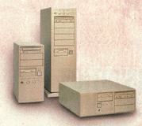

 |
Prva komponenta kada se zapoèinje sa
sklapanjem kompjutera. Vrlo je bitno napraviti pravi
izbor jer se vrlo teško odluèuje na zamenu kada se
kompjuter jednom kompletira. Desktop je u poèetku kompjuterske revolucije bio skoro jedini izbor. Mini ili midi tower je standarna verzija kuæišta. Big tower je namenjen profesionalnim korisnicima. Ono što je zajednièko za sva kuæišta je da dolaze zajedno sa napajanjem. |
|
| desktop, midi i big tower |
| ProCOM, Proizvodnja Servis
Programiranje Kompjutera, Elektronskih ureðaja i opreme; Beograd, YU office@procom.co.yu tel.: 063.206.386 |